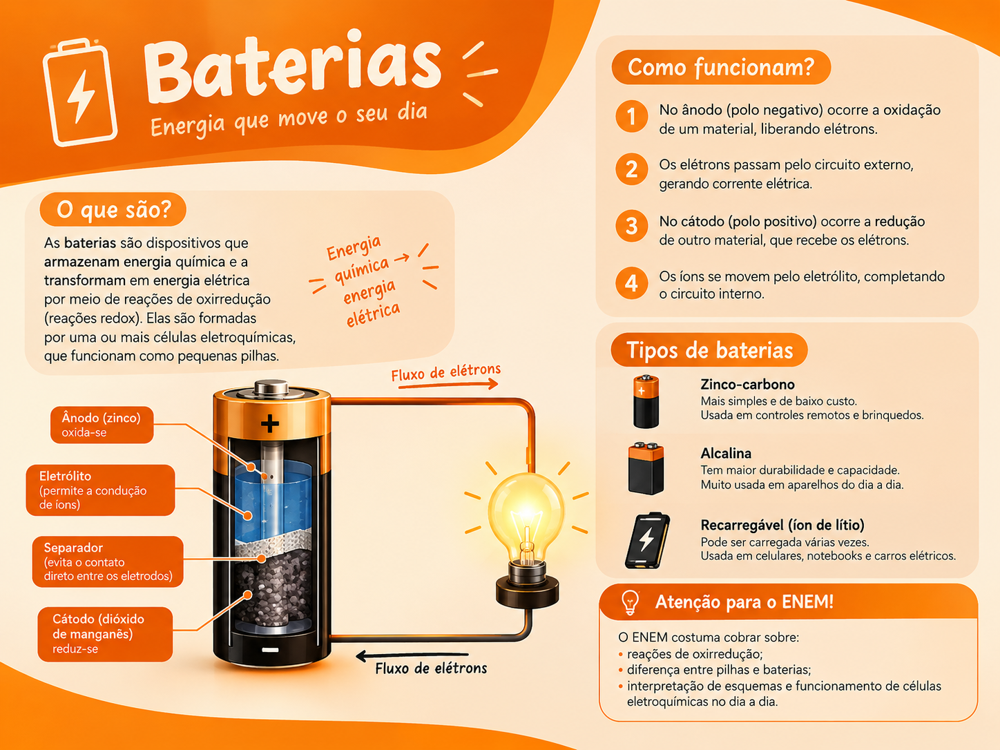

Bateria de íons de lítio: utilizada em celulares, notebooks e carros elétricos.
Bateria de chumbo-ácido: comum em automóveis.
Bateria de níquel-hidreto metálico: utilizada em alguns aparelhos e sistemas recarregáveis.

As baterias armazenam energia química e a transformam em energia elétrica quando um aparelho precisa funcionar. Uma bateria pode ser formada por uma ou mais células eletroquímicas. Ela funciona de maneira semelhante a uma pilha, mas existem diferentes tipos de composição e funcionamento.
Bateria de íons de lítio: utilizada em celulares, notebooks e carros elétricos.
Bateria de chumbo-ácido: comum em automóveis.
Bateria de níquel-hidreto metálico: utilizada em alguns aparelhos e sistemas recarregáveis.
Durante a descarga, ela fornece energia elétrica ao aparelho.
Quando é conectada a um carregador adequado, a energia elétrica provoca reações químicas que restauram parte de sua energia armazenada.
No uso cotidiano, chamamos de pilha geralmente as unidades menores, muitas vezes descartáveis, e de bateria os dispositivos recarregáveis ou conjuntos de células. Cientificamente, porém, os termos podem se sobrepor.